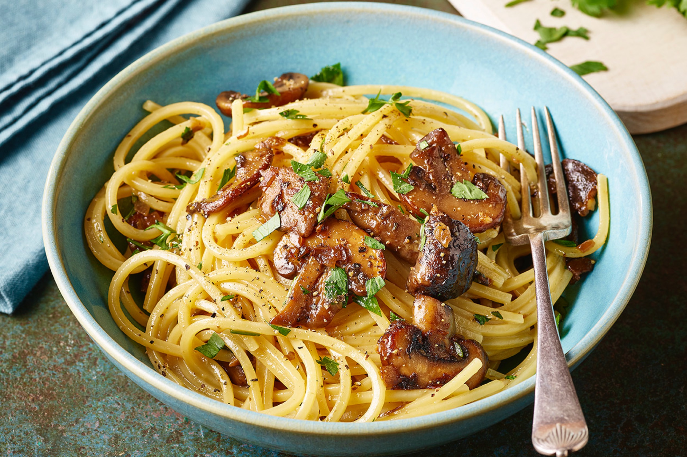

Carbonara sauce

Description
Discover how to make superb spaghetti carbonara.
This cheesy pasta dish is an Italian favourite
and with the right technique, you can make it
perfect every time
Ingredients
- 100g pancetta
- 50g pecorino cheese
- 50g parmesan
Steps
- Put a large saucepan of water on to boil.
- Finely chop the 100g pancetta, having first
removed any rind. Finely grate 50g pecorino
cheese and 50g parmesan and mix them together.
- Beat the 3 large eggs in a medium bowl and
season with a little freshly grated black
pepper. Set everything aside.
- Add 1 tsp salt to the boiling water, add
350g spaghetti and when the water comes
back to the boil, cook at a constant simmer,
covered, for 10 minutes or until al dente
(just cooked).
- Squash 2 peeled plump garlic cloves with the
blade of a knife, just to bruise it.